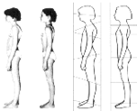

|
|  | Von allen Kräften, die auf uns einwirken, ist die Schwerkraft die den Körper am meisten in seiner Struktur beeinflussende Kraft. Fehlhaltungen in diesem Feld führen zu degenerativen Schäden überlasteter Gelenke und Gewebe, zu verminderter Vitalität und beeinträchtigen biologische und psychologische Prozesse. |
Ist der Körper nach einer Rolfingserie wieder im Lot, wird weniger Energie
im Kampf gegen die Schwerkraft verschwendet.
Dieser Effekt wird
vom Klienten oft als "wacher" und vitaler empfunden. Bewegungsabläufe
werden harmonischer und der persönliche Ausdruck verstärkt sich hin zu
einer stärkeren Präsenz. Rolfing eignet sich für Menschen aller
Altersklassen, die an Verspannungen oder anderen strukturell bedingten
Schmerzzuständen leiden. Es richtet sich aber auch an alle, die ihren
Körper effektiver nutzen möchten wie z. B. Sportler oder Tänzer sowie an
jeden, der an einer persönlichen Entwicklung interessiert ist.
Um Körpersegmente in ihrer Position zu verändern, beschäftigt sich der Rolfer mit dem dreidimensionalen Netzwerk der Bindegewebsfasern bzw. Fascien. Dieses Netzwerk, bekannt als myofasciales System, ist das "Organ der Struktur" im Körper. Es unterstützt das Skelett und die weichen Gewebe, positioniert die Knochen, legt die Richtung der Muskelzüge und deren Bewegung fest und gibt dem Gesamtkörper letztendlich seine Form.
Der menschliche Körper hält sich aufrecht mit Hilfe von in ein Netzwerk fascialer Hüllen eingebetteter Muskelgruppen. Jede dieser Gruppen arbeitet normalerweise mit Gegenspielern zusammen, so dass sie sich miteinander in einem harmonischen Gleichgewicht befinden. Wenn einer der beiden sich anspannt, muss der Gegenspieler dem Zug kontrolliert nachgeben, um das Gleichgewicht zu gewährleisten. Ist das Verhältnis durch einen Unfall oder chronischer Spannung in einer der Gruppen gestört, passt sich die umliegende Fascie diesem Umstand an und verkürzt sich. Der Rest des Körpers muss diese Spannung kompensieren, um das "Gleichgewicht" aufrechtzuerhalten. Die Aufgabe des Rolfings besteht darin, diese Verkürzungen aufzuspüren und zu lösen. So ermöglicht man dem betroffenen Gewebe eine Rückkehr in die balancierte Normalposition, kompensatorische Reaktionen des Körpers werden sich dann ebenso der neuen Situation anpassen. Wenn das myofasciale System wieder organisiert ist, wird die Schwerkraft im positiven Sinne auf den Körper einwirken. Eine Nachhaltigkeit der Haltungskorrektur ist damit gewährleistet.
Die Grundserie des Rolfings besteht aus zehn Sitzungen. Der Rolfer startet mit der Bewertung der Körperstruktur im Stehen, Sitzen sowie in der Bewegung. Meist findet die Behandlung im Liegen statt, wo der Rolfer mit gefühlvollem, aber festem Druck verkürzte Gewebe aufsucht. In Verbindung mit genauer Positionierung sowie passiver oder aktiver Bewegung von Seiten des Klienten löst er die Fixierungen. Jede Rolfingsitzung baut auf den Ergebnissen der vorherigen auf. Die ersten sieben Sitzungen beseitigen Spannungen aus verschiedenen Körperarealen: Den unteren Rücken, Nacken, Becken, Knie etc. Die folgenden drei Sitzungen beschäftigen sich mit der Integration und Koordination des Gesamtkörpers mit dem Ziel eine gute Balance, einen erweiterten Bewegungsspielraum und erhöhte Vitalität zu etablieren. Die Sitzungen dauern ca.1-1 ¼ Stunden. Der Abstand zwischen den Sitzungen variiert individuell und beträgt 1 bis max. 4 Wochen.
|
Tel. 089 / 27 27 30 04 |